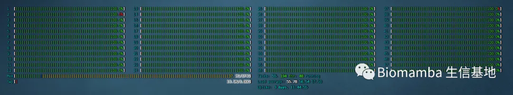
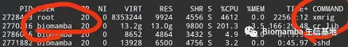

好人难当,谁拿我服务器挖矿了？
原文：https://mp.weixin.qq.com/s?__biz=MzAwMzIzOTk5OQ==&mid=2247487979&idx=1&sn=2ad31f5dff96143b437655a7d678ac55&chksm=9b3f68bbac48e1ad54b17744e8fb403bc86df3395e5ab0aede4f4ac6a43f12035ab70f63421f#rd 合集：漫谈胡侃
之前想着大家使用起来方便，就自己拉了台服务器部署了一些App(我把之前的在线工具都挪了个窝)，并且全部对大家免费开放 。今天一觉睡醒好家伙整台服务器的线程都满了，正好在跑cellranger，本以为是cellranger占用了太多线程，仔细一想我48线程的服务器应该最多只用了20线程 才对，部署的shiny-server也不太可能吃那么多线程。

找找原因，htop 打开任务管理器一看，好家伙谁拿xmrig在我服务器挖矿呢，可恶的mei国病毒，想偷我大天朝的电（但我实际调查了一下发现是德克萨斯 的IP拿着咱们北面 的好兄弟开发的病毒 攻击了我，这如何评价呢。。。）。到底是我孤陋寡闻了，我这没有GPU的机器现在居然仅靠CPU也能挖矿了。
攻击了我，这如何评价呢。。。）。到底是我孤陋寡闻了，我这没有GPU的机器现在居然仅靠CPU也能挖矿了。

先把程序杀了再说：
-
- *
sudo kill -9 2728463sudo passwd root#大家自己的机器记得养成定时改密码的好习惯
为了给大家提供方便，我的App先暂时不做处理，仍然部署并对外开放，下次再有类似情况，可能就要关闭我的端口啦。希望大家共同维护我这个小破号的良好环境，方便你我他。

如何联系我们
 公众号后台中消息更新不及时，超过48h后便不允许回复读者消息，这里给大家留一下领取资料、咨询服务器的微信号 ，方便大家随时交流、提建议（由助理接待）。此外呼声一直很高的交流群也建好了，欢迎大家入群讨论：你们要的微信、交流群，来了！
大家可以阅读完这几篇之后添加笑一笑也就算了有关提高"Biomamba 生信基地"运行效率事宜
公众号后台中消息更新不及时，超过48h后便不允许回复读者消息，这里给大家留一下领取资料、咨询服务器的微信号 ，方便大家随时交流、提建议（由助理接待）。此外呼声一直很高的交流群也建好了，欢迎大家入群讨论：你们要的微信、交流群，来了！
大家可以阅读完这几篇之后添加笑一笑也就算了有关提高"Biomamba 生信基地"运行效率事宜